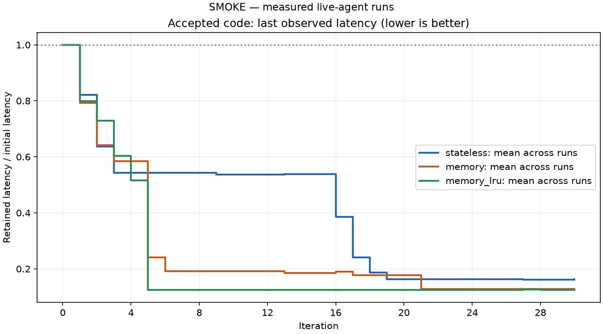
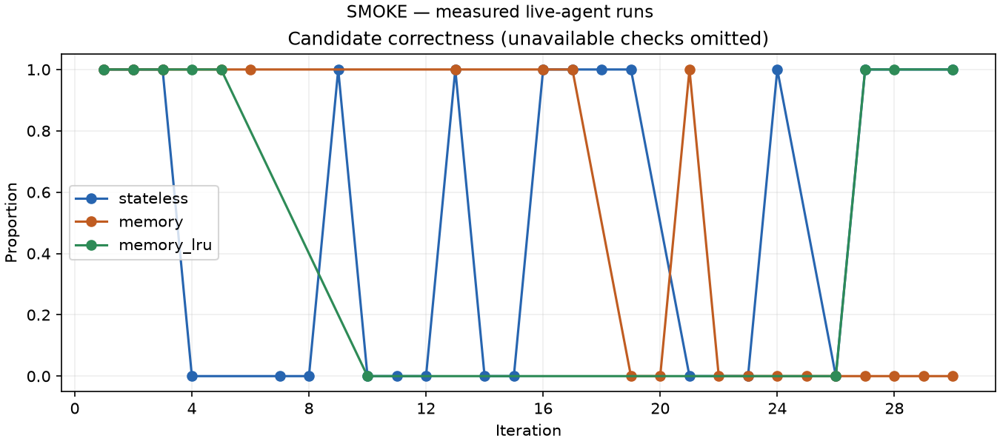

smoke-chat-measured-e6ab8e8c86e6-strict
SMOKE — measured live-agent runs. Independent runs: 3. LRU capacity: 6. Means over complete runs.
| arm | final_remeasurement_score_ms | baseline_speedup | accepted_changes | correctness_pass_rate | repeated_unsuccessful_approaches | input_tokens | output_tokens |
|---|
| stateless | 0.7372 (n=1) | 6.156 (n=1) | 7 (n=1) | 0.5217 (n=1) | 8 (n=1) | 9.045e+05 (n=1) | 1.011e+05 (n=1) |
| memory | 0.5838 (n=1) | 7.809 (n=1) | 6 (n=1) | 0.45 (n=1) | 20 (n=1) | 1.305e+06 (n=1) | 9.382e+04 (n=1) |
| memory_lru | 0.5599 (n=1) | 7.962 (n=1) | 5 (n=1) | 0.8 (n=1) | 23 (n=1) | 1.06e+06 (n=1) | 7.279e+04 (n=1) |


Summary · Replicate comparisons · LRU usage · Attempts · Runs